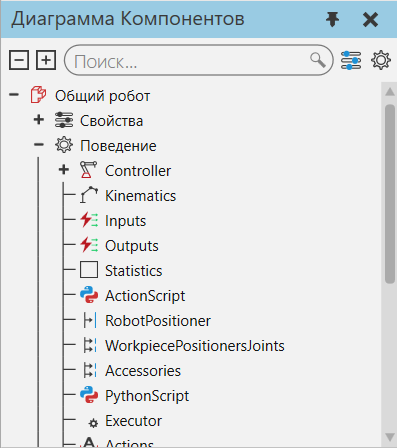

Выбор поведения в компоненте |
|
Вам нужно использовать панель Диаграмма компонента для выбора поведения в компоненте. 1.В трехмерном мире выберите компонент. 2.Щелкните вкладку Моделирование, а затем в панели Диаграмма компонента, Дерево узлов компонента, разверните один или несколько узлов. 3.Если варианты поведения не указаны под узлами, установите флажок Поведение. 4.Разверните один или несколько списков поведения, чтобы найти поведение, которое вы хотите выбрать, а затем выберите поведение. Альтернативой является поиск поведения по имени с помощью поля поиска.
 |